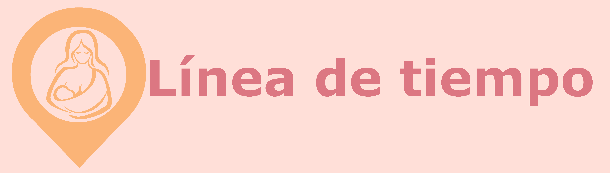

En esta sesión se revisarán los sucesos históricos que antecedieron la primera guía de la Organización Mundial de la Salud de la Iniciativa Hospital Amigo del Niño, así como la legislación y los sucesos relacionados con la promoción, protección y apoyo a la lactancia materna en México.
Interpretar los sucesos históricos claves relacionados con la promoción, protección y apoyo a la lactancia materna, recalcando los antecedentes de la Guía para la aplicación. Protección, promoción y apoyo de la lactancia natural en los centros que prestan servicios de maternidad y neonatología: revisión de la iniciativa «Hospital amigo del niño».
En esta primera sesión es importante conocer los sucesos históricos de la promoción, protección y apoyo a la lactancia materna, para lo cual se presenta el siguiente recurso educativo, para visualizarlo haga clic sobre éste:
Reflexiones
Ya que se conocen los antecedentes de la promoción, protección y apoyo a la lactancia materna, es importante reflexionar acerca de la responsabilidad, como personal de salud, de que las madres tomen decisiones informadas y apoyarlas para lograr sus metas en cuanto a la etapa de lactancia, por lo que se propone revisar las siguientes aseveraciones:
Cuando el cuidado de la lactancia se conceptualiza más allá del campo clínico, queda claro que el éxito o el fracaso de la lactancia materna no es responsabilidad exclusiva de la mujer. Su capacidad de amamantar está determinada por el apoyo de las políticas públicas y los programas de la comunidad.
Los hospitales no están ahí sólo para curar a los enfermos, sino para promover la vida y velar porque las personas puedan prosperar y vivir sus vidas desarrollando todo su potencial, según el doctor Tedros: "Como parte de la campaña de todos los países para lograr la cobertura sanitaria universal, la medida mejor y más importante que hay que adoptar en primer lugar es velar porque los Diez pasos hacia una feliz lactancia natural sean la norma para el cuidado de las madres y sus bebés". Se debe "…capacitar a padres y madres, y favorecer la lactancia materna". (OMS, 2018).
Figura 1.1
Para evaluar el contenido del tema 1, Sucesos históricos de la promoción, protección y apoyo a la lactancia materna, diríjase a la sección de Actividades, e ingrese a la Prueba corta 1, atendiendo las indicaciones para su realización.
Acclam. (2020, 27 julio). Facebook-Meld je aan of registreer je [Publicación de Facebook]. Facebook. https://www.facebook.com/AsociacionIBCLCMex/
Baby Milk Action Resources Centre. (s. f). Baby Milk Action Resources Centre. Babymilkaction.org. http://archive.babymilkaction.org/pages/resources.html
Bengoa, L. (2003). Historia de la nutrición en salud pública. Anales Venezolanos de Nutrición, 16(2), 85-96. http://ve.scielo.org/scielo.php?script=sci_arttext&pid=S0798-07522003000200005
Chantry, C. J., Eglash, A., & Labbok, M. (2015). ABM Position on Breastfeeding-Revised 2015. Breastfeeding Medicine, 10(9), 407-411. https://doi.org/10.1089/bfm.2015.29012.cha
Diario Oficial de la Federación. (2020, 17 agosto). DOF-Diario Oficial de la Federación. SEGOB-Diario Oficial de la Federación. http://dof.gob.mx/nota_detalle.php?codigo=5598474&fecha=17/08/2020
Global Network. For the right to food and nutrition. (s. f.). International Baby Food Action Network. International Baby Food Action Network | Www.Righttofoodandnutrition.Org. https://www.righttofoodandnutrition.org/international-baby-food-action-network
IBLCE (International Board of Lactation Consultant Examiners). (2021, 5 junio). Español. IBLCE. https://iblce.org/spanish-3/
Iniciativa para la Humanización de la Asistencia al Nacimiento y la Lactancia. (s. f.). Pasos para ser IHAN-Centros de Salud | iHan. Ihan.es. https://www.ihan.es/que-es-ihan/pasos/pasos-para-ser-ihan-centros-de-salud/
Jelliffe, D. B. (1972). Commerciogenic malnutrition? Nutrition Reviews, 30(9), 199-205. https://doi.org/10.1111/j.1753-4887.1972.tb04042.x
Jelliffe, D. B. & Jelliffe, E. F. P. (1978). Human milk in the modern world. Oxford University Press. https://www.ncbi.nlm.nih.gov/pmc/articles/PMC1608823/
Lasarte, J. J. (2016, 25 mayo). 60 Aniversario de la Liga de la Leche Internacional | iHan. iHan.es. https://www.ihan.es/60-aniversario-de-la-liga-de-la-leche-internacional/
Organización Internacional del Trabajo. (s. f.). C103-Convenio sobre la protección de la maternidad (revisado), 1952 (núm. 103). https://www.ilo.org/dyn/normlex/es/f?p=NORMLEXPUB:12100:0::NO::P12100_ILO_CODE:C103
Organización Mundial de la Salud. (2018, 11 abril). La OMS y el UNICEF publican nuevas directrices para promover la lactancia materna en los establecimientos de salud de todo el mundo. https://www.who.int/es/news/item/11-04-2018-who-and-unicef-issue-new-guidance-to-promote-breastfeeding-in-health-facilities-globally
Times, T. N. Y. (1981, 6 diciembre). The controversy over infant formula. The New York Times. https://www.nytimes.com/1981/12/06/magazine/the-controversy-over-infant-formula.html
War on Want. (s. f.). We believe a better world is possible. War on Want Works in the UK and with partners around the world to fight poverty and defend human rights as part of the movement for global justice. Waronwant.org. https://waronwant.org/
Williams, C. D. (2009). KWASHIORKOR: A Nutritional Disease of Children Associated With A Maize Diet. Nutrition Reviews, 31(11), 350-351. https://doi.org/10.1111/j.1753-4887.1973.tb07044.x
World Health Organization. (2018, 13 abril). Iniciativa Hospital Amigo del Niño. Organización Mundial de la Salud. https://www.who.int/nutrition/publications/infantfeeding/bfhi_trainingcourse/es/
World Health Organization. (2017, 1 agosto). Lactancia materna. Organización Mundial de la Salud. https://www.who.int/topics/breastfeeding/es/
World Health Organization. (2019, 19 septiembre). Proteger, promover y apoyar la lactancia materna en los establecimientos que prestan servicios de maternidad y neonatología - Revisión de la Iniciativa Hospitales Amigos del Niño 2018. Organización Mundial de la Salud. https://www.who.int/nutrition/publications/infantfeeding/bfhi-implementation/es/
World Health Organization. (2018, diciembre 4). Código Internacional de Comercialización de Sucedáneos de la Leche Materna. Organización Mundial de la Salud. https://www.ihan.es/que-es-ihan/pasos/pasos-para-ser-ihan-centros-de-salud/
World Health Organization. (2013, julio 9). OMS | Estrategia Mundial para la Alimentación del Lactante y del Niño Pequeño. Organización Mundial de la Salud. https://www.who.int/maternal_child_adolescent/topics/newborn/nutrition/global/es/#:~:text=La%20finalidad%20de%20la%20Estrategia,lactante%20y%20del%20ni%C3%B1o%20peque%C3%B1o.
Consideraciones importantes:
Descripción:
Después de analizar los contenidos de la sesión introductoria y de la sesión: Sucesos históricos de la promoción, protección y apoyo a la lactancia materna, ingrese al apartado de Exámenes de Eminus para responder la Prueba corta 1 que contempla 10 preguntas.
Las respuestas se asignarán una vez que conteste correctamente 8 de las 10 preguntas, lo cual es un requisito de acreditación del curso. Los intentos para lograr la calificación de 8 son ilimitados. Esta prueba forma parte de su calificación.
Para lo anterior, considere las siguientes indicaciones: